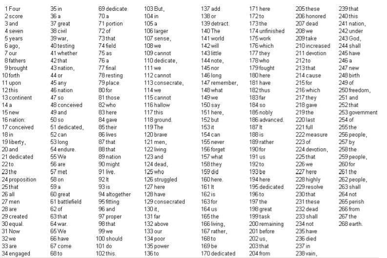

Chapter 1 Part 2
Investigations 1.8 - 1.18Chapter 1 Part 2
Investigations 1.8 - 1.18 Oct 16, 2020
In section 2 of Chapter 1, we expanded our methods of analysis to include distributions and focused more heavily on analyzing sampling methods as effective or not at representing population statistics.
Investigations 1.8 and 1.9: Reese's Pieces/Halloween Treats
 Key Terms
Key Terms
Normal Random Variables: A variable whose distribution can be reasonably modeled with a normal probability curve, and is continuous.
Mean: Denoted by μ, this is the average of the data, generally the peak and a point of symmetry for normal random variables.
Standard Deviation: Denoted by σ, this is the distance between the mean and inflection points on the curve, or where the shape of the probability starts to change.
Central Limit Theorem (CLT): A theorem that states if the sample size is large enough, then the sampling distribution of the sample proportion p̂ will be well modeled by a normal distribution, with its mean at the expected value of p̂
Standardized Score: A way to calculate the number of standard deviations between an observation and the mean of the distribution. The distance of the observation from the mean is scaled by the standard deviation for a normal distribution such that z=1 implies the observation is 1 standard deviation from the mean.
Emperical Rule (68-95-99.7): This is a mnemonic rule that mimics the sizes of the area under a normal distribution curve. Between z=-1 and z=1, 68% of the data will fall within 1 standard deviation from the mean. 95% will fall under 2 standard deviations and 99.7% of obersved points will fall under 3 deviations.
Test Statistic: A formula to test the observed statistic against the hypothesized parameter. The formula measures the z-score of the statistic, essentially how many standard deviations the observed proportion p̂ lies from the hypothesized process proportion.
One Proportion z-Test: This test measures the test statistic of a parameter, calculating the probability of success based on the p-value given from the probability of a value being compared to the z-statistic.
These investigations introduced the normal probability model to approximate p-values. We learned about the sample proportion, and how reporting it can be more informative than the sample count. Taking different samples from the population can lead to different spreads in the distribution, though the shapes should stay the same. We learned how to calculate the standard deviation of a statistic, z-values, and z-scores. We worked more with categorical variables, though still binary.
Investigation 1.10: Kissing the Right Way (cont.)
Key Terms
Standard Error: The SE is an estimated standard deviation of the statistic. It is calculated using the statistic as the parameter when calculating the standard deviation.
Critical Value: The z* is the z-score that makes P(-z*<=Z<=z*) = C for some specified probability C.
Margin-of-Error: The half-width interval is the critical value scaled by the standard error.
One-Sample z-Interval: Known as the "Wald interval," a miminum of 10 successes and 10 failures allows the measurement of an approximate CI for the parameter, given by the statistic plus or minus the margin-of-error.
Confidence Level: This measures the reliability of the method of observation, essentially it shows the long-run percentage of intervals that capture the actual parameter value. A CL shows a valid procedure when the achieved long-run coverage rate matches the stated CL.
Continuing the last investigation, we applied some new techniques to analyze our data, like using the CLT to predict a normal distribution of the sample proportion. We looked at different critical values for the distribution of data, and calculated standard deviations, and the sample sizes affected these values.
Investigations 1.12, 1.13, and 1.14: Sampling Words/Literary Digest

Key Terms
Population: The entire collection of observational units the study is interested in predicting attributes for.
Sample: The sample is a subset of the population, from which data is gathered.
Parameter: The numerical characteristic of a population
Biased/Unbiased: A biased sampling method implies the characteristics resulting from sampling are systematically different from characteristics of the population. An unbiased sampling method, on the other hand, stands up to repeated sampling from the same population, where at the center of the distribution is the population parameter.
Simple Random Sample: Every observational unity in the population is given the same chance of being sampled.
CLT for a Sample Proportion: Essentially expanding upon the CLT, if the samples are drawn from a large but finite population with a large enough sample size, the the sampling distribution of the sampling proportion will be well modeled by a normal distribution with mean equal to the population proportion of successes. Again, as with CLT, the sample size is considered large enough if n times the proportion of successes is greater than 10, and same with 1 minus the proportion of successes.
Non-Sampling Errors: These are errors that occur after a sample has been selected. For instance, the word choice of survey questions, dishonest or inaccurate responses, faulty memory, the order of questions, leading tones, and even the appearance of interviewers.
Hypergeometric Random Variable: A process must involving observing from a population without replacement, and categorize the observational units as either successes or failures, which applies even to the unobserved units in the population group. The biggest difference here is that trials are not independent.
In these studies, we looked at a process of selecting samples from a population, like a list of words, and how our selections sometimes did and didn't match the parameters for the entire population. We also looked at bias errors that come from participant selection. When looking at the standard deviation, we saw that variability follows predictable patterns in the long run, and that average sample proportions tend towards the population proportion. We looked more at sampling frames with investigation 1.13 and how completely inaccurate samples can sometimes be, not representing the population parameter at all.
Investigations 1.16, 1.17, and 1.18:
We looked at studies suggesting 1 in 5 teens has hearing loss, calculating the test statistic based on these values. Using this, we were not able to reject the null hypothesis. Next, we surveyed cat households, exploring a binary categorical variable. Essentially we measured the validity of the claim that the proportion of households that owned a cat was equal to 1/3, which we rejected. Finally we looked a female senators and the difference in representation from a sample of just senators. This is a bad sampling method for the distribution of the entire population because it is a biased method